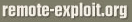
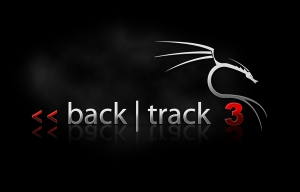

BackTrack
BackTrack is the most Top rated linux live distribution focused on penetration testing. With no installation whatsoever, the analysis platform is started directly from the CD-Rom and is fully accessible within minutes.
It's evolved from the merge of the two wide spread distributions - Whax and Auditor Security Collection. By joining forces and replacing these distributions, BackTrack has gained massive popularity and was voted in 2006 as the #1 Security Live Distribution by insecure.org. Security professionals as well as new comers are using BackTrack as their favorite toolset all over the globe.
BackTrack has a long history and was based on many different linux distributions until it is now based on a Slackware linux distribution and the corresponding live-CD scripts by Tomas M. (www.slax.org) . Every package, kernel configuration and script is optimized to be used by security penetration testers. Patches and automation have been added, applied or developed to provide a neat and ready-to-go environment.
After coming into a stable development procedure during the last releases and consolidating feedbacks and addition, the team was focused to support more and newer hardware as well as provide more flexibility and modularity by restructuring the build and maintenance processes. With the current version, most applications are built as individual modules which help to speed up the maintenance releases and fixes.
Because Metasploit is one of the key tools for most analysts it is tightly integrated into BackTrack and both projects collaborate together to always provide an on-the-edge implementation of Metasploit within the BackTrack CD-Rom images or the upcoming remote-exploit.org distributed and maintained virtualization images (like VMWare images appliances).
Being superior while staying easy to use is key to a good security live cd. We took things a step further and aligned BackTrack to penetration testing methodologies and assessment frameworks (ISSAF and OSSTMM). This will help our professional users during their daily reporting nightmares.
Currently BackTrack consists of more than 300 different up-to-date tools which are logically structured according to the work flow of security professionals. This structure allows even newcomers to find the related tools to a certain task to be accomplished. New technologies and testing techniques are merged into BackTrack as soon as possible to keep it up-to-date.
No other commercial or freely available analysis platform offers an equivalent level of usability with automatic configuration and focus on penetration testing.